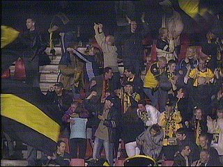
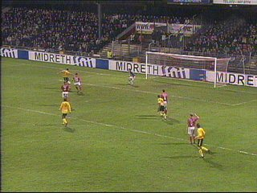

|
AZ - Roda JC (1-5) 22 november 2003 |
De plaatselijke muppen ontvingen de spelers.
Het fel aanvallende AZ stuit op de voortreffelijk
keepende Kujovic en op Senden die een bal op de
lijn redt.
Vandenbroeck had een overtredinkje nodig op de
doorgebroken Buskermolen. Geel voor Sven en
een pingel voor Van Galen.
Van Galen schiet a la Panenka, echter op de lat.
Senden maakt het mafste doelpunt van het jaar.
Een mislukte voorzet over 40 meter zeilt tot
ieders verbazing over Timmer in de linkerboven-
hoek.
Het doelpunt valt in de 44e minuut.

Het Rodapubliek had een fantastische avond. De
Alkmaarderhout werd platgezongen.
0-2 door Anastasiou (50').
0-3 door Vicelich (52').

0-4 door Anastasiou (63').
1-4 door Elkhattabi (68').
1-5 door Kone (77').
Arouna komt een dansje maken bij het uitvak.
Het bedankje na afloop van de wedstrijd.
Gerrie was de gevierde man vanavond en moest
voor de NOS-microfoon uitleggen hoe zijn goal
tot stand kwam.
© Koempels
Pleasure Dome